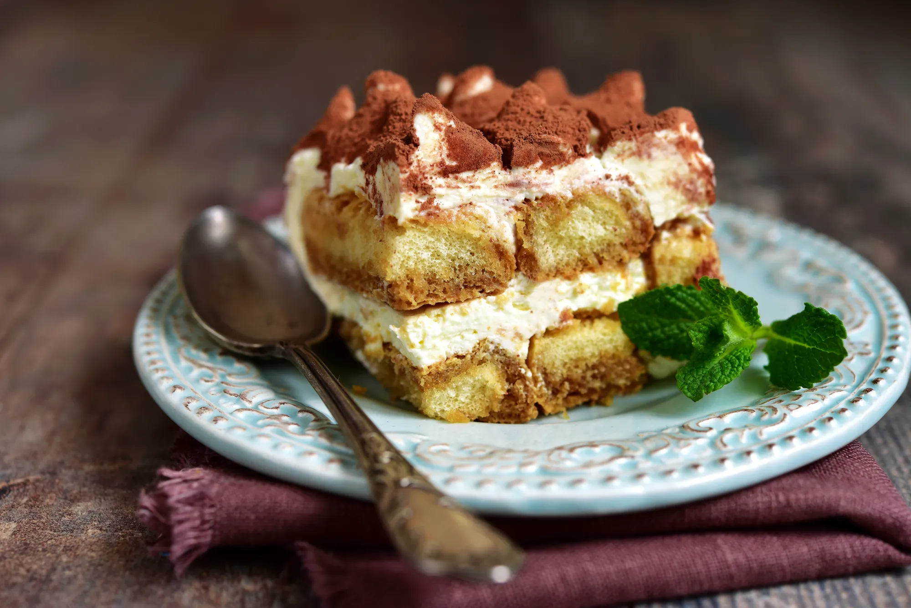

gourmet tiramisu

ingredienten
- 100 g bruine suiker
- 1 pakje vanillesuiker
- 24 lepel koeken
- 30 g cacao poeder
- 3 eieren
- 250 g mascarpon
- 50 g ongezoete zwarte koffie
bereiding
- Scheid de eiwitten van de dooiers.
- Meng de dooiers met de bruine suiker en de vanillesuiker.
- Voeg de mascarpone toe met een garde.
- Klop de eiwitten stijf en spatel ze voorzichtig met een spatel door het vorige mengsel. Reserveren.
- Maak de koekjes snel nat in de koffie voordat u de bodem van de schaal bekleedt.
- Bedek met een laag mascarponecrème en herhaal de handeling, wissel een laag koekjes en een laag room af en eindig met de laatste.
- Bestrooi met cacao.
- Zet minimaal 4 uur in de koelkast en geniet daarna gekoeld.